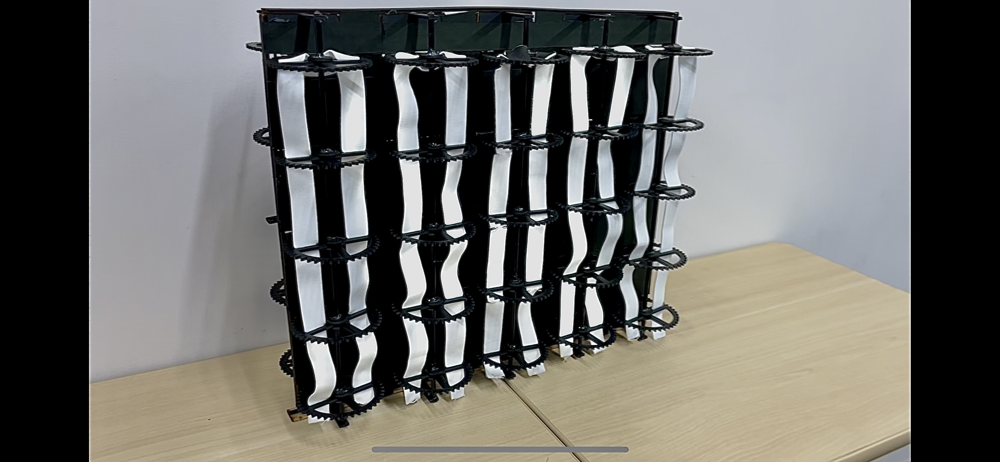

Twisted Band Display

平行に配置した 2 本の紐とギア機構によるねじりを利用したディスプレイ。ギアにより平行の2本の紐をねじり、交差させることで、紐の表裏が反転し背面側の色が表示される。
紐をねじることで上下方向に滑らかに移動するアニメーションを表示することができ、紐の裏表の表示を切り替えることでピクセル的に情報を表示することができる。
紐のねじりは25台のサーボモータにより制御しておりサーボモータはArduinoを使用し制御している。
本ディスプレイは、映像表現・芸術科学フォーラム2024にて発表した。